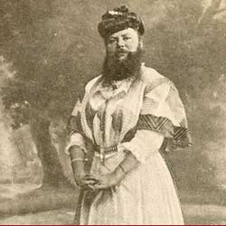

|
| Home|Talent|Cosmetic|Deformity|Abnormal|Ethnological |
The Cosmetic FreaksAs stated before, phsical differences were a major attraction in Freak Shows. While some freaks were either too big or too small, others had cosmetic differences that made them stand out. Amongst them are the albinos, the bearded woman, skin deformities, tatoos, and the werewolf man. |